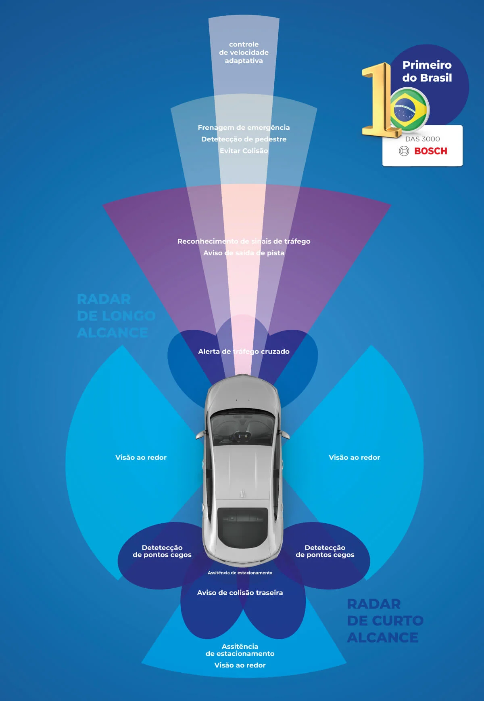
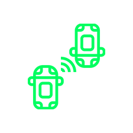
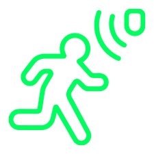

O que é ADAS
O ADAS (Advanced Driver Assistance Systems) é a base da direção assistida e o caminho natural para o desenvolvimento dos veículos autônomos. Esse sistema utiliza um conjunto de câmeras, sensores e radares que trabalham em conjunto para monitorar o ambiente ao redor do veículo, alertar o motorista sobre riscos e, em algumas situações, agir automaticamente para evitar acidentes.

Frenagem automática de emergência
Ajuda a reduzir o risco de colisões com atuação automática em situações críticas.
Alerta e correção de saída de faixa
Emite alerta e pode corrigir desvios involuntários de faixa.
Leitura de placas
Interpreta a sinalização da via para apoiar a condução.

Distância segura
Monitora o espaço para o veículo à frente e melhora a previsibilidade.

Ponto cego
Aumenta a percepção do entorno e reduz pontos sem visibilidade.

Assistência ao condutor
Integra funções de condução assistida e velocidade adaptativa.